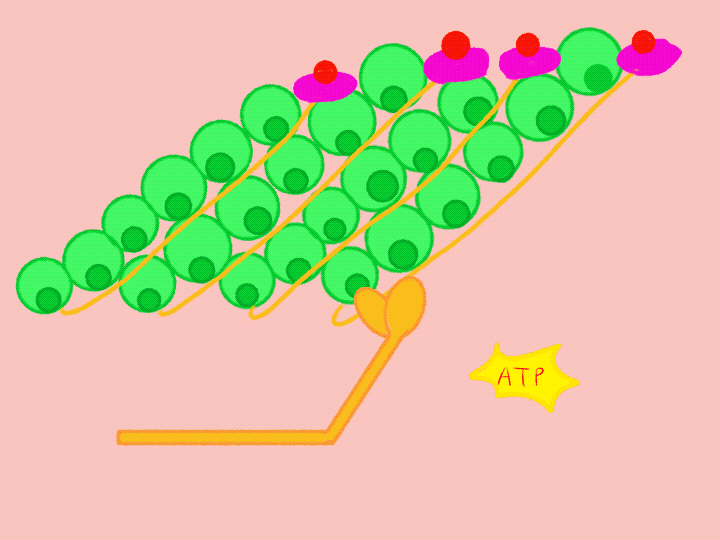

A new ATP molecule binds to the myosin head, causing it to detach from actin. ATP is then hydrolyzed, returning the myosin head to its high-energy position. As long as calcium remains available and the binding sites on actin stay exposed, the myosin head can attach again and repeat the cycle.
